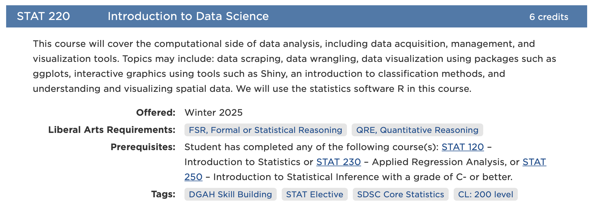
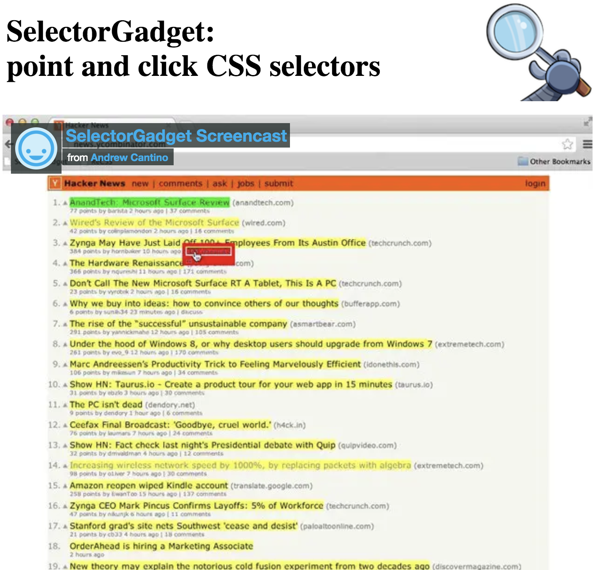
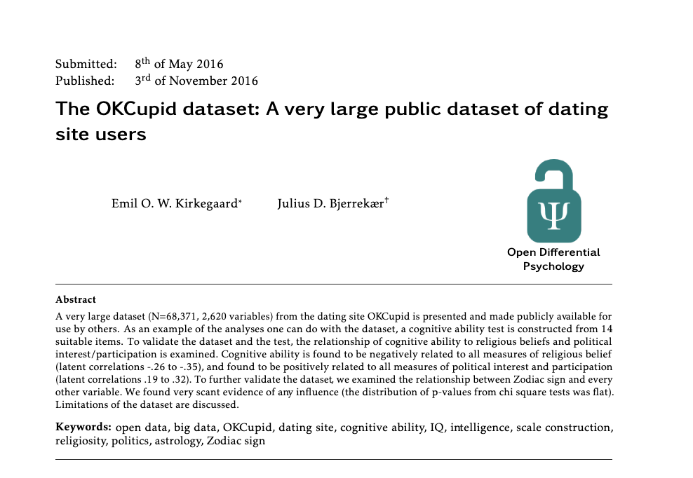
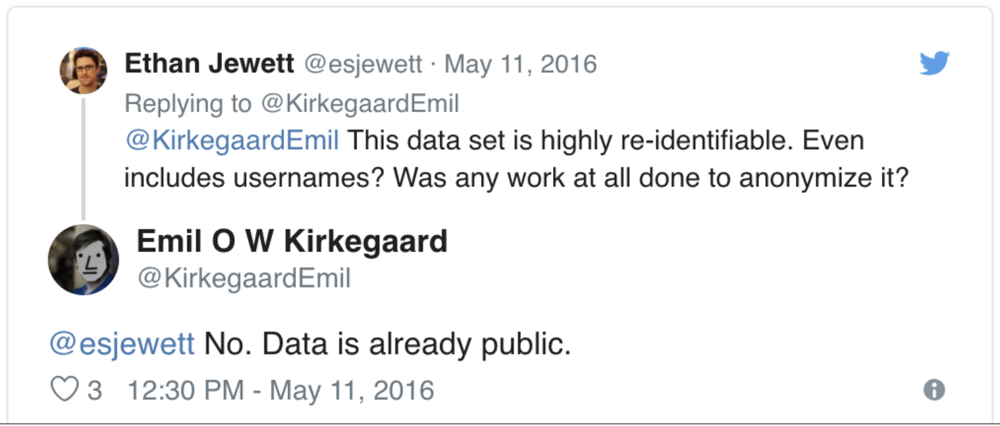

[1] TRUE[1] FALSEDay 21
Carleton College
Stat 220 - Fall 2026
Web APIs (application programming interface): website offers a set of structured http requests that return JSON or XML files.
Screen scraping:
extract data from source code of website, with html parser (easy) or regular expression matching (less easy).
[1] TRUE[1] FALSErobots.txt isn’t the whole story: also read the terms of use, and don’t send requests faster than a person wouldrvest functions| Function | Description |
|---|---|
read_html |
Read HTML data from a url or character string |
html_element |
Select a specified element from HTML document |
html_elements |
Select specified elements from HTML document |
html_table |
Parse an HTML table into a data frame |
html_text |
Extract tag pairs’ content |
html_name |
Extract tags’ names |
html_attrs |
Extract all of each tag’s attributes |
html_attr |
Extract tags’ attribute value by name |
https://www.carleton.edu/catalog/current/search/?subject=STAT&term=26FA

View the page source to try to find the html elements where this data is located (e.g. ‘h1’, ‘p’, ‘table’)
03:00
{xml_nodeset (19)}
[1] <h3 class="courseTitleBar">\n <span class="courseNumber" data ...
[2] <h3 class="courseTitleBar">\n <span class="courseNumber" data ...
[3] <h3 class="courseTitleBar">\n <span class="courseNumber" data ...
[4] <h3 class="courseTitleBar">\n <span class="courseNumber" data ...
[5] <h3 class="courseTitleBar">\n <span class="courseNumber" data ...
[6] <h3 class="courseTitleBar">\n <span class="courseNumber" data ...
[7] <h3 class="courseTitleBar">\n <span class="courseNumber" data ...
[8] <h3 class="courseTitleBar">\n <span class="courseNumber" data ...
[9] <h3 class="courseSearchResultsHeading relatedCourses" id="relatedCourses ...
[10] <h3 class="courseTitleBar">\n <span class="courseNumber" data ...
[11] <h3 class="courseTitleBar">\n <span class="courseNumber" data ...
[12] <h3 class="courseTitleBar">\n <span class="courseNumber" data ...
[13] <h3 class="courseTitleBar">\n <span class="courseNumber" data ...
[14] <h3 class="courseTitleBar">\n <span class="courseNumber" data ...
[15] <h3 class="courseTitleBar">\n <span class="courseNumber" data ...
[16] <h3 class="courseTitleBar">\n <span class="courseNumber" data ...
[17] <h3 class="courseTitleBar">\n <span class="courseNumber" data ...
[18] <h3>Liberal Arts Requirements</h3>
[19] <h3>Other Course Tags</h3> [1] "\n STAT 120\n Introduction to Statistics\n \n 6 credits\n \n "
[2] "\n STAT 220\n Introduction to Data Science\n \n 6 credits\n \n "
[3] "\n STAT 230\n Applied Regression Analysis\n \n 6 credits\n \n "
[4] "\n STAT 285\n Statistical Consulting\n \n 2 credits\n \n "
[5] "\n STAT 294\n Directed Research in Statistics\n \n 1 – 6 credits\n \n "
[6] "\n STAT 297\n Assessment and Communication of External Statistical Activity\n \n 1 credits\n \n "
[7] "\n STAT 394\n Directed Research in Statistics\n \n 1 – 6 credits\n \n "
[8] "\n STAT 399\n Senior Seminar\n \n 6 credits\n \n "
[9] "Related Courses"
[10] "\n CS 111\n Introduction to Computer Science\n \n 6 credits\n \n "
[11] "\n MATH 101\n Calculus with Problem Solving\n \n 6 credits\n \n "
[12] "\n MATH 111\n Introduction to Calculus\n \n 6 credits\n \n "
[13] "\n MATH 120\n Calculus 2\n \n 6 credits\n \n "
[14] "\n MATH 134\n Linear Algebra with Applications\n \n 6 credits\n \n "
[15] "\n MATH 211\n Introduction to Multivariable Calculus\n \n 6 credits\n \n "
[16] "\n MATH 232\n Linear Algebra\n \n 6 credits\n \n "
[17] "\n MATH 240\n Probability\n \n 6 credits\n \n "
[18] "Liberal Arts Requirements"
[19] "Other Course Tags" [1] "STAT 120 Introduction to Statistics 6 credits"
[2] "STAT 220 Introduction to Data Science 6 credits"
[3] "STAT 230 Applied Regression Analysis 6 credits"
[4] "STAT 285 Statistical Consulting 2 credits"
[5] "STAT 294 Directed Research in Statistics 1 – 6 credits"
[6] "STAT 297 Assessment and Communication of External Statistical Activity 1 credits"
[7] "STAT 394 Directed Research in Statistics 1 – 6 credits"
[8] "STAT 399 Senior Seminar 6 credits"
[9] "Related Courses"
[10] "CS 111 Introduction to Computer Science 6 credits"
[11] "MATH 101 Calculus with Problem Solving 6 credits"
[12] "MATH 111 Introduction to Calculus 6 credits"
[13] "MATH 120 Calculus 2 6 credits"
[14] "MATH 134 Linear Algebra with Applications 6 credits"
[15] "MATH 211 Introduction to Multivariable Calculus 6 credits"
[16] "MATH 232 Linear Algebra 6 credits"
[17] "MATH 240 Probability 6 credits"
[18] "Liberal Arts Requirements"
[19] "Other Course Tags" courseNumber classCourse numbers are between <span class="courseNumber"> ... </span> tags
These tags can be selected using . followed by the name of the class
{xml_nodeset (16)}
[1] <span class="courseNumber" data-terms="26/FA">STAT 120</span>
[2] <span class="courseNumber" data-terms="26/FA">STAT 220</span>
[3] <span class="courseNumber" data-terms="26/FA">STAT 230</span>
[4] <span class="courseNumber" data-terms="26/FA">STAT 285</span>
[5] <span class="courseNumber" data-terms="26/FA 26/FA2 27/WI 27/SP">STAT 29 ...
[6] <span class="courseNumber" data-terms="26/FA">STAT 297</span>
[7] <span class="courseNumber" data-terms="26/FA 27/WI 27/SP">STAT 394</span>
[8] <span class="courseNumber" data-terms="26/FA">STAT 399</span>
[9] <span class="courseNumber" data-terms="26/FA">CS 111</span>
[10] <span class="courseNumber" data-terms="26/FA">MATH 101</span>
[11] <span class="courseNumber" data-terms="26/FA">MATH 111</span>
[12] <span class="courseNumber" data-terms="26/FA">MATH 120</span>
[13] <span class="courseNumber" data-terms="26/FA">MATH 134</span>
[14] <span class="courseNumber" data-terms="26/FA">MATH 211</span>
[15] <span class="courseNumber" data-terms="26/FA">MATH 232</span>
[16] <span class="courseNumber" data-terms="26/FA">MATH 240</span> [1] "\n 6 credits\n "
[2] "\n 6 credits\n "
[3] "\n 6 credits\n "
[4] "\n 2 credits\n "
[5] "\n 1 – 6 credits\n "
[6] "\n 1 credits\n "
[7] "\n 1 – 6 credits\n "
[8] "\n 6 credits\n "
[9] "\n 6 credits\n "
[10] "\n 6 credits\n "
[11] "\n 6 credits\n "
[12] "\n 6 credits\n "
[13] "\n 6 credits\n "
[14] "\n 6 credits\n "
[15] "\n 6 credits\n "
[16] "\n 6 credits\n " stat_courses <- tibble(
course = listings |> html_elements(".courseNumber") |> html_text(),
title = listings |> html_elements(".courseTitle") |> html_text(),
credits = listings |> html_elements(".credits") |> html_text() |> str_squish(),
description = listings |> html_elements(".courseDetailWrapper") |> html_text() |> str_squish()
)
stat_courses |> mutate(description = str_trunc(description, 50))# A tibble: 16 × 4
course title credits description
<chr> <chr> <chr> <chr>
1 STAT 120 Introduction to Statistics 6 cred… Introducti…
2 STAT 220 Introduction to Data Science 6 cred… This cours…
3 STAT 230 Applied Regression Analysis 6 cred… A second c…
4 STAT 285 Statistical Consulting 2 cred… Students w…
5 STAT 294 Directed Research in Statistics 1 – 6 … Students w…
6 STAT 297 Assessment and Communication of External Statis… 1 cred… An indepen…
7 STAT 394 Directed Research in Statistics 1 – 6 … Students w…
8 STAT 399 Senior Seminar 6 cred… As part of…
9 CS 111 Introduction to Computer Science 6 cred… This cours…
10 MATH 101 Calculus with Problem Solving 6 cred… An introdu…
11 MATH 111 Introduction to Calculus 6 cred… An introdu…
12 MATH 120 Calculus 2 6 cred… Inverse fu…
13 MATH 134 Linear Algebra with Applications 6 cred… Linear alg…
14 MATH 211 Introduction to Multivariable Calculus 6 cred… Vectors, c…
15 MATH 232 Linear Algebra 6 cred… Linear alg…
16 MATH 240 Probability 6 cred… Introducti…Let’s get the prerequisites:
There are 16 courses, but only 14 prerequisite lines, and we can’t tell which ones are missing
Each course is one <li> inside .courseSearchResults:
# A tibble: 6 × 2
course prereqs
<chr> <chr>
1 STAT 120 Prerequisites: Not open to students that have taken PSYC ...
2 STAT 220 Prerequisites: Student has completed any of the following...
3 STAT 230 Prerequisites: Student has completed any of the following...
4 STAT 285 Prerequisites: Student has completed the following course...
5 STAT 294 <NA>
6 STAT 297 Prerequisites: Student is a member of the STAT 297 01 coh... [1] "STAT 120.01 Fall 2026"
[2] "STAT 120.02 Fall 2026"
[3] "STAT 120.03 Fall 2026"
[4] "STAT 220.01 Fall 2026"
[5] "STAT 230.01 Fall 2026"
[6] "STAT 285.01 Fall 2026"
[7] "STAT 294.11 Fall 2026"
[8] "STAT 294.12 Second Five Weeks, Fall 2026"
[9] "STAT 297.01 Fall 2026"
[10] "STAT 394.11 Fall 2026"
[11] "STAT 399.01 Fall 2026"
[12] "CS 111.01 Fall 2026"
[13] "CS 111.02 Fall 2026"
[14] "MATH 101.01 Fall 2026"
[15] "MATH 111.01 Fall 2026"
[16] "MATH 111.02 Fall 2026"
[17] "MATH 120.01 Fall 2026"
[18] "MATH 120.02 Fall 2026"
[19] "MATH 120.03 Fall 2026"
[20] "MATH 134.01 Fall 2026"
[21] "MATH 211.01 Fall 2026"
[22] "MATH 211.02 Fall 2026"
[23] "MATH 232.01 Fall 2026"
[24] "MATH 240.01 Fall 2026"
[25] "MATH 240.02 Fall 2026" [1] "STAT 120.01 Fall 2026 Faculty: Marta Shore 🏫 👤 Size:32 M, WCMC 102 9:50am-11:00am FCMC 102 9:40am-10:40am"
[2] "STAT 120.02 Fall 2026 Faculty: Claire Kelling 🏫 👤 Size:32 M, WCMC 102 11:10am-12:20pm FCMC 102 12:00pm-1:00pm"
[3] "STAT 120.03 Fall 2026 Faculty: Marta Shore 🏫 👤 Size:32 M, WCMC 102 1:50pm-3:00pm FCMC 102 2:20pm-3:20pm"
[4] "STAT 220.01 Fall 2026 Faculty: Amanda Luby 🏫 👤 Size:30 M, WCMC 306 9:50am-11:00am FCMC 306 9:40am-10:40am"
[5] "STAT 230.01 Fall 2026 Faculty: Amanda Luby 🏫 👤 Size:28 M, WCMC 306 12:30pm-1:40pm FCMC 306 1:10pm-2:10pm"
[6] "STAT 285.01 Fall 2026 Faculty: Claire Kelling 🏫 👤 Size:12 Grading:S/CR/NC TCMC 304 10:10am-11:55am"
[7] "STAT 294.11 Fall 2026 Faculty: Claire Kelling 🏫 👤 Grading:S/CR/NC Credits:1 – 3"
[8] "STAT 294.12 Second Five Weeks, Fall 2026 Faculty: Claire Kelling 🏫 👤 Grading:S/CR/NC Credits:1"
[9] "STAT 297.01 Fall 2026 Faculty: Claire Kelling 🏫 👤 · Rob Thompson 🏫 👤 Size:1 Grading:S/CR/NC"
[10] "STAT 394.11 Fall 2026 Faculty: Claire Kelling 🏫 👤 Grading:S/CR/NC Credits:1 – 3"
[11] "STAT 399.01 Fall 2026 Faculty: Claire Kelling 🏫 👤 Size:12 Grading:S/CR/NC T, THCMC 306 1:15pm-3:00pm"
[12] "CS 111.01 Fall 2026 Faculty: Chelsey Edge 🏫 👤 Size:48 M, WOlin 310 11:10am-12:20pm FOlin 310 12:00pm-1:00pm Sophomore Priority Anticipated prefect-supported section."
[13] "CS 111.02 Fall 2026 Faculty: Jean Salac 🏫 👤 Size:48 M, WOlin 310 9:50am-11:00am FOlin 310 9:40am-10:40am Sophomore Priority Anticipated prefect-supported section."
[14] "MATH 101.01 Fall 2026 Faculty: Alicia Prieto-Langarica 🏫 👤 Size:30 M, WCMC 210 11:10am-12:20pm FCMC 210 12:00pm-1:00pm"
[15] "MATH 111.01 Fall 2026 Faculty: Joseph Johnson 🏫 👤 Size:30 M, WCMC 206 11:10am-12:20pm FCMC 206 12:00pm-1:00pm Not open to students who have received credit for MATH 101 Anticipated prefect-supported section."
[16] "MATH 111.02 Fall 2026 Faculty: Joseph Johnson 🏫 👤 Size:30 M, WCMC 206 1:50pm-3:00pm FCMC 206 2:20pm-3:20pm Not open to students who have received credit for MATH 101 Anticipated prefect-supported section."
[17] "MATH 120.01 Fall 2026 Faculty: Deewang Bhamidipati 🏫 👤 Size:30 M, WCMC 210 9:50am-11:00am FCMC 210 9:40am-10:40am"
[18] "MATH 120.02 Fall 2026 Faculty: Claudio Gómez-Gonzáles 🏫 👤 Size:30 M, WCMC 209 9:50am-11:00am FCMC 209 9:40am-10:40am Not open to students who have received credit for MATH 211 or have a score of 4 or 5 on the AP Calculus BC exam. Anticipated prefect-supported section."
[19] "MATH 120.03 Fall 2026 Faculty: Claudio Gómez-Gonzáles 🏫 👤 Size:30 M, WCMC 209 11:10am-12:20pm FCMC 209 12:00pm-1:00pm"
[20] "MATH 134.01 Fall 2026 Faculty: MurphyKate Montee 🏫 👤 Size:30 M, WCMC 206 9:50am-11:00am FCMC 206 9:40am-10:40am"
[21] "MATH 211.01 Fall 2026 Faculty: Sunrose Shrestha 🏫 👤 Size:30 M, WCMC 301 9:50am-11:00am FCMC 301 9:40am-10:40am"
[22] "MATH 211.02 Fall 2026 Faculty: Sunrose Shrestha 🏫 👤 Size:30 M, WCMC 301 11:10am-12:20pm FCMC 301 12:00pm-1:00pm"
[23] "MATH 232.01 Fall 2026 Faculty: Deewang Bhamidipati 🏫 👤 Size:30 M, WCMC 210 12:30pm-1:40pm FCMC 210 1:10pm-2:10pm"
[24] "MATH 240.01 Fall 2026 Faculty: Adam Loy 🏫 👤 Size:30 M, WCMC 301 12:30pm-1:40pm FCMC 301 1:10pm-2:10pm"
[25] "MATH 240.02 Fall 2026 Faculty: Adam Loy 🏫 👤 Size:30 M, WCMC 301 1:50pm-3:00pm FCMC 301 2:20pm-3:20pm" Open source tool that eases CSS selector generation and discovery
Easiest to use with the Chrome Extension
Find out more on the SelectorGadget vignette

A fake bookstore built for practicing web scraping.
03:00
[1] 20Just like the courses: select the cards first, then extract from each one.
The text on the page is cut off with “…”, but the full title is in the link’s title attribute:
[1] "A Light in the ..." "Tipping the Velvet" "Soumission" books <- tibble(
title = cards |> html_element("h3 a") |> html_attr("title"),
price = cards |> html_element(".price_color") |> html_text() |> parse_number(),
rating = cards |> html_element(".star-rating") |> html_attr("class") |> str_remove("star-rating "),
in_stock = cards |> html_element(".availability") |> html_text() |> str_squish() == "In stock"
) |>
mutate(rating = factor(rating, levels = c("One", "Two", "Three", "Four", "Five")))
books# A tibble: 20 × 4
title price rating in_stock
<chr> <dbl> <fct> <lgl>
1 A Light in the Attic 51.8 Three TRUE
2 Tipping the Velvet 53.7 One TRUE
3 Soumission 50.1 One TRUE
4 Sharp Objects 47.8 Four TRUE
5 Sapiens: A Brief History of Humankind 54.2 Five TRUE
6 The Requiem Red 22.7 One TRUE
7 The Dirty Little Secrets of Getting Your Dream Job 33.3 Four TRUE
8 The Coming Woman: A Novel Based on the Life of the Inf… 17.9 Three TRUE
9 The Boys in the Boat: Nine Americans and Their Epic Qu… 22.6 Four TRUE
10 The Black Maria 52.2 One TRUE
11 Starving Hearts (Triangular Trade Trilogy, #1) 14.0 Two TRUE
12 Shakespeare's Sonnets 20.7 Four TRUE
13 Set Me Free 17.5 Five TRUE
14 Scott Pilgrim's Precious Little Life (Scott Pilgrim #1) 52.3 Five TRUE
15 Rip it Up and Start Again 35.0 Five TRUE
16 Our Band Could Be Your Life: Scenes from the American … 57.2 Three TRUE
17 Olio 23.9 One TRUE
18 Mesaerion: The Best Science Fiction Stories 1800-1849 37.6 One TRUE
19 Libertarianism for Beginners 51.3 Two TRUE
20 It's Only the Himalayas 45.2 Two TRUE The URL changes with the page number:
https://books.toscrape.com/catalogue/page-1.htmlhttps://books.toscrape.com/catalogue/page-2.htmlhttps://books.toscrape.com/catalogue/page-50.htmlWe know how to repeat things: write a function, then map over the pages
scrape_books <- function(page) {
url <- paste0("https://books.toscrape.com/catalogue/page-", page, ".html")
cards <- read_html(url) |> html_elements("article.product_pod")
tibble(
title = cards |> html_element("h3 a") |> html_attr("title"),
price = cards |> html_element(".price_color") |> html_text() |> parse_number(),
rating = cards |> html_element(".star-rating") |> html_attr("class") |> str_remove("star-rating "),
in_stock = cards |> html_element(".availability") |> html_text() |> str_squish() == "In stock",
page = page
)
}# A tibble: 5 x 2
rating n
<fct> <int>
1 One 15
2 Two 8
3 Three 13
4 Four 10
5 Five 14Sys.sleep() keeps you from hammering the websitewrite_csv() so you only scrape oncepaths_allowed().text, author, and tags.
08:00
I used to use IMDb’s Top 250 as an example, but now:
Error in paths_allowed("https://www.imdb.com/chart/top"): could not find function "paths_allowed"Error in read_xml.raw(raw, encoding = encoding, base_url = base_url, as_html = as_html, : Failed to parse textQuarto document:
R script:
data-cleaning.Rfit-models.Rscrape-data.RDataset includes variables like:


https://www.tandfonline.com/doi/abs/10.1080/10691898.2015.11889737